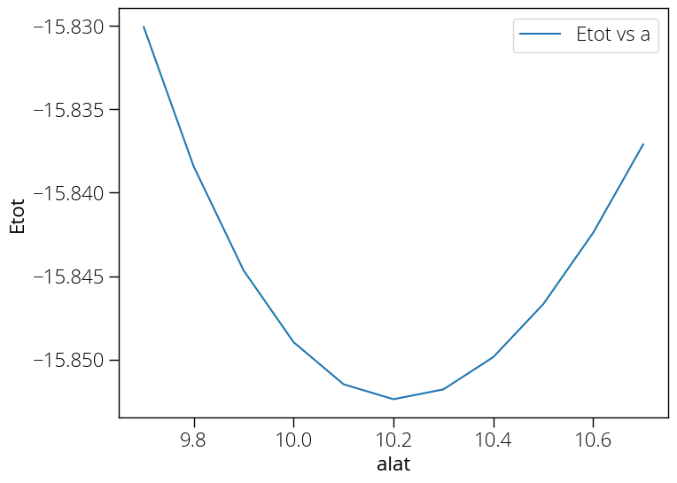

Convergence against lattice constant
Calculating total energy with respect to varying lattice constant.
load_fromPWI si.scf.in
# please uncomment & insert value as determined in the "ecutwfc" exercise
SYSTEM { ecutwfc = 30 }
# please uncomment & insert values as determined in the "kpoints" exercise
K_POINTS automatic { 6 6 6 1 1 1 }
set fid [open Etot-vs-alat.dat w]
foreach alat { 9.7 9.8 9.9 10.0 10.1 10.2 10.3 10.4 10.5 10.6 10.7 } {
set name pw.Si.scf.alat-$alat
SYSTEM "celldm(1) = $alat"
runPW $name.in
set Etot [::pwtk::pwo::totene $name.out]
puts $fid "$alat $Etot"
}
close $fid
Run above code:
pwtk alat.pwtk
